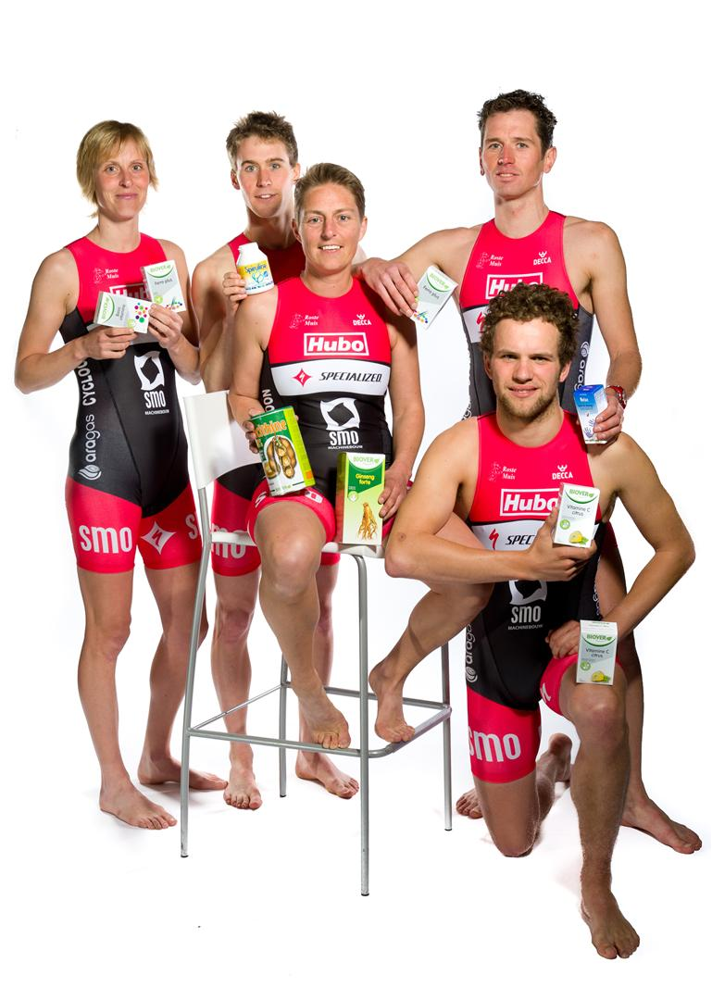

Een compleet en veilig gamma om prestaties, uithouding, krachtopbouw en recuperatie te bevorderen.
Een compleet en veilig gamma om prestaties, uithouding, krachtopbouw en recuperatie te bevorderen.
Het sportassortiment bestaat uit 6 producten voor professionele en recreatiesporters die vaak op hoog niveau willen presteren. Het gamma onderscheidt zich van veel andere sportproducten door zijn uitstekende doeltreffendheid, volledigheid en gegarandeerde veiligheid.

Correcte trainingsmethoden, aangepaste voeding en voldoende rust zijn noodzakelijke voorwaarden voor het leveren van sportprestaties. Wetenschappelijke studies hebben aangetoond dat een aan de sport aangepaste voeding van doorslaggevend belang is voor sportprestaties. Zo kan het nuttig zijn om op de juiste tijdstippen voor de juiste hoeveelheden koolhydraten te kiezen of om voldoende water te drinken. Als sporters hun sportbeoefening naar een hoger niveau willen tillen en als de voedingsbasis goed zit, kunnen ze bij extreme inspanningen hun toevlucht nemen tot een sportsupplement. Voedingssupplementen die onder andere de uithouding bevorderen en helpen bij de recuperatie kunnen hier aangewezen zijn. Sinds 25 jaar biedt Biover een doeltreffend gamma van natuurlijke, hooggedoseerde producten die bijdragen tot het dagelijks goed functioneren.
Folder sport gamma 
Bron: http://www.biover.be/biover-sport